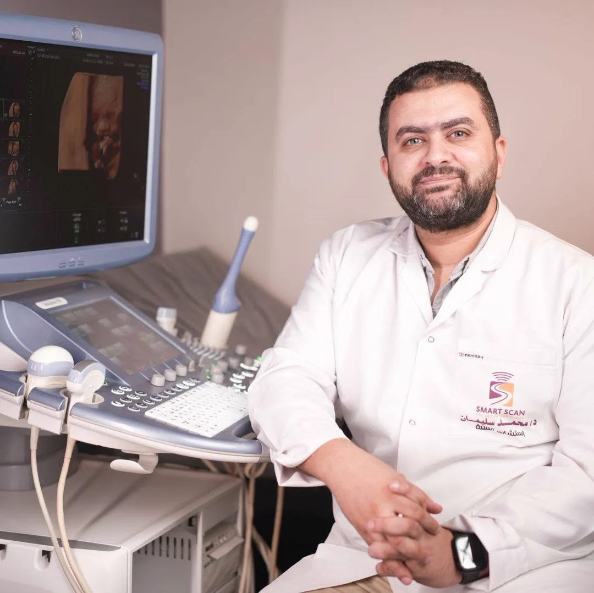
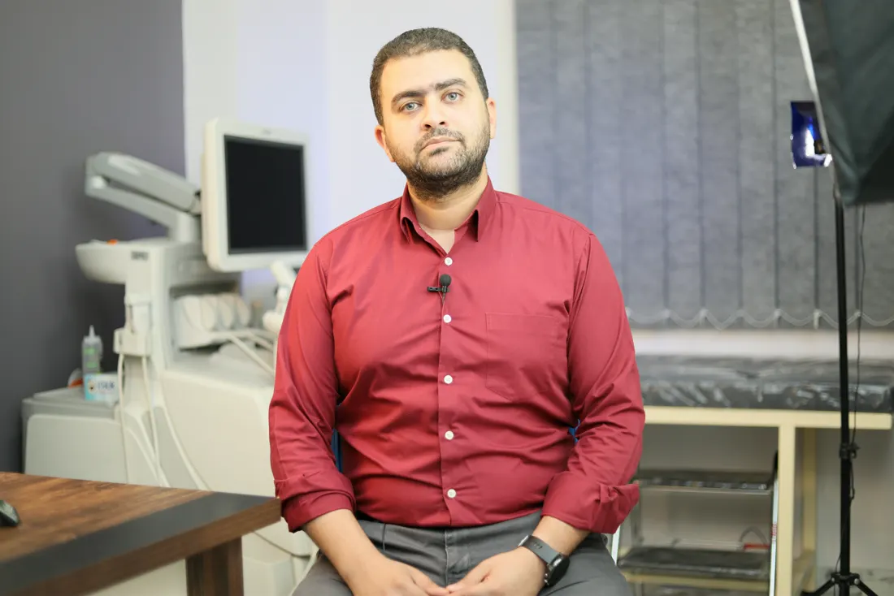

مكتبة الأشعة
معلومة طبية أوضح. قرار أكثر اطمئنانًا.
أدلة قصيرة وموثقة تساعد المريض والأسرة على فهم الفحص والاستعداد له، بلغة بسيطة ومن دون تهويل.
أحدث المقالات
ابدأ من السؤال الأقرب لك
كل مقال مبني على مراجع طبية موثوقة، مع التأكيد أن تعليمات طبيبك أو مركز الفحص هي المرجع لحالتك.

كيف تستعد لفحص السونار؟
الصيام أم شرب الماء؟ ما الذي تحضره معك؟ ولماذا تختلف التعليمات حسب نوع الفحص؟
اقرأ المقال ←سونار الأطفال: ماذا تتوقع الأسرة؟
خطوات بسيطة تساعد الطفل وولي الأمر على خوض الفحص بهدوء أكبر.
اقرأ المقال ←
السونار رباعي الأبعاد: ما الفرق؟
فهم مبسط لما تعنيه الصورة ثلاثية ورباعية الأبعاد، ومتى تكون جزءًا من التقييم الطبي.
اقرأ المقال ←شاهد أيضًا
المعلومة أحيانًا تكون أوضح في دقيقة.
مكتبة مرئية تجمع مقاطع من بيئة الفحص ومنصة المحاضرة في مكان واحد.
اذهب إلى الفيديوهات ←